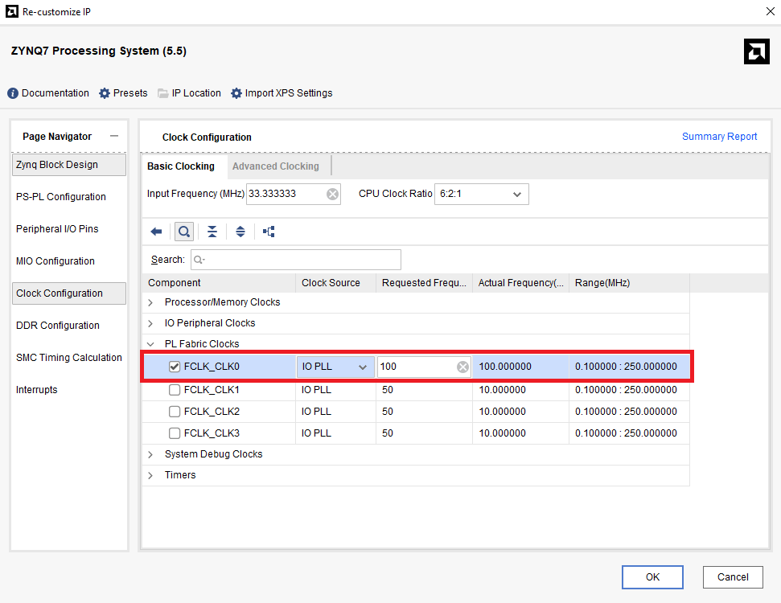
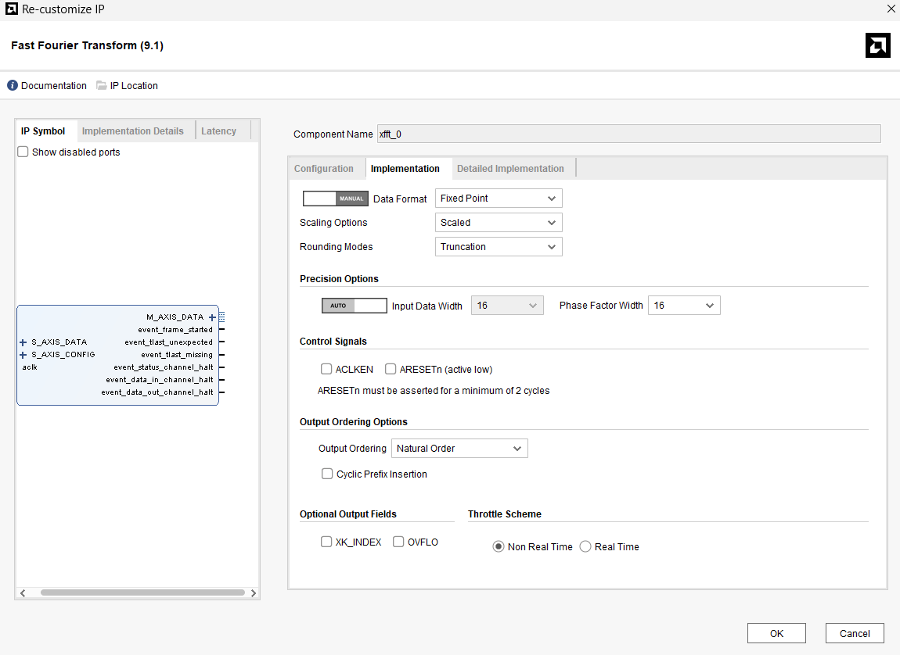
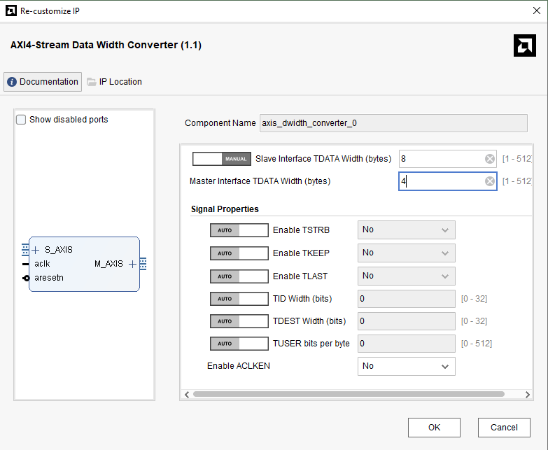
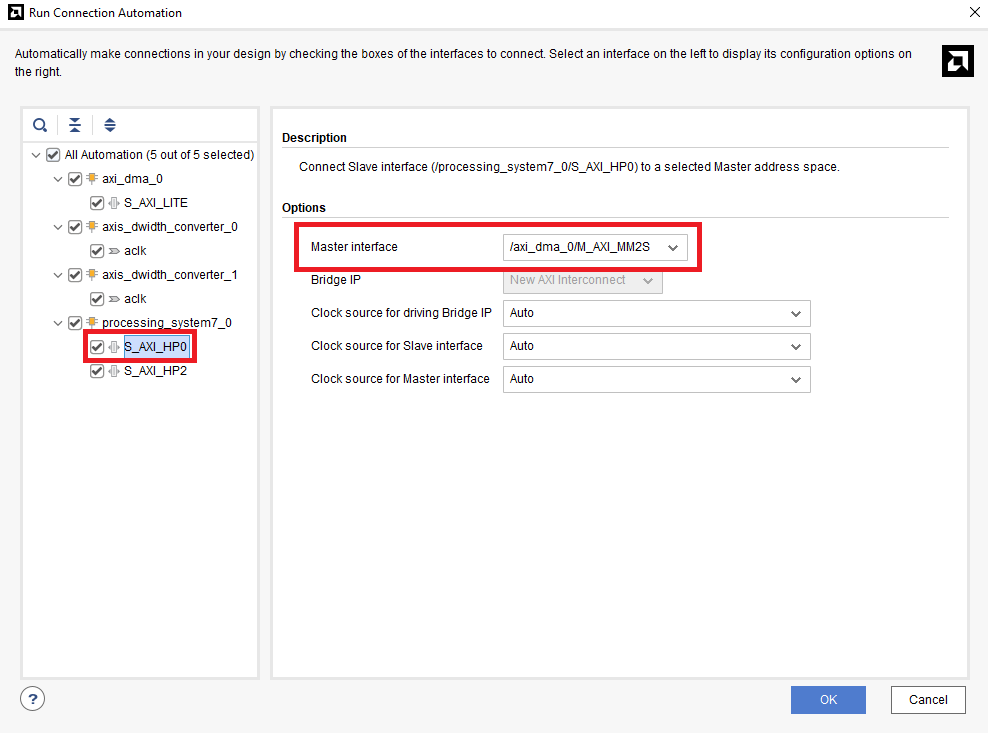

Part7-DMA
本章將介紹如何在 PYNQ 上使用 Direct Memory Access (DMA) 模組實現資料傳輸，並加速 FFT 運算。
Review AXI Stream

AXI Stream 基本訊號
| 訊號名稱 | 方向 | 功能說明 |
|---|---|---|
TVALID |
Master ➜ Slave | 傳送端通知接收端資料有效 |
TREADY |
Slave ➜ Master | 接收端準備好接收資料 |
TDATA |
Master ➜ Slave | 資料 |
TLAST |
Master ➜ Slave | 表示此資料為最後一筆 |
TKEEP |
Master ➜ Slave | Byte-level 有效位元 Mask |
Handshake Mechanism
當 TVALID 與 TREADY 同時為高時，資料才會被傳輸。
由 TLAST=1 來表示「一筆資料傳輸的結束」。
如果接收端突然把 TREADY 從 1 拉成 0，會怎樣？
- 傳送端仍然會保持 TVALID=1，表示資料還是有效、準備好傳送。
- 但資料不會實際送出或被接收，因為 TVALID & TREADY ≠ 1。
- 傳送端會「停住」在當前那筆資料，不會推進到下一筆，直到 TREADY 再次變成 1。
DMA Module

DMA 在 Xilinx 提供的 IP 當中有分兩種 Mode，分別是 Scatter Gather Mode (SG Mode) 和 Simple Mode，上圖為 Simple Mode 下的 DMA Module。
Port Description
| 介面名稱 | 功能描述 | AXI 類型 |
|---|---|---|
| S_AXI_LITE | 控制介面，連接至 ZYNQ PS 的 AXI General Port (GP)（PS端設定 DMA 的配置用 Register） | AXI4-Lite（Slave） |
| S_AXIS_S2MM | Stream to Memory-Mapped：輸出資料寫回記憶體 | AXI4-Stream（Slave） |
| M_AXIS_MM2S | Memory-Mapped to Stream：DMA 從記憶體取資料 | AXI4-Stream（Master） |
| M_AXI_MM2S | DMA 從 PS 記憶體抓資料送出 | AXI4 (Memory-Mapped)（Master） |
| M_AXI_S2MM | DMA 將資料寫回 PS 記憶體 | AXI4 (Memory-Mapped)（Master） |
| introut (mm2s/s2mm) | 傳輸完成的 interrupt 訊號，若使用 interrupt mode 時連接至 ZYNQ PS | — |

📌請注意上圖 DDR Controller 實際上是在 ZYNQ7_PS 當中

Settings

-
Enable Scatter Gather Engine:
DMA 的 Scatter-Gather (SG) Mode 是為了處理多筆、分散在記憶體不同位置的資料，讓 DMA 可以自動依照 descriptor 傳輸多段資料，而不需要 CPU 一直介入控制。 (若無特殊需求，則建議停用此功能，使用較簡單的 Simple Mode 即可) -
Width of Buffer Length Register (8–26):
這是 DMA 寫入/讀取的最大 buffer 長度限制，DMA 一次最大可以搬運多少資料，以 Byte 為單位，最大值為26代表每次最多可傳輸 2^26 = 64MB 的資料。 -
Address Width (32–64):
代表 DMA 可以搬運的記憶體空間大小，在 Zynq7000 系列的晶片組 (PYNQ-Z2只有512MB DDR) 設置成 32 即可對應到 4G 的記憶體 -
Memory Map Data Width:
將會修改 AXI_MM2S / AXI_S2MM interface 的 rdata 寬度，直接影響 DMA 讀取 Memory 的資料寬度 -
Stream Data Width:
將會修改 AXIS_S2MM / AXIS_MM2S interface 的 tdata 寬度。影響後續Stream 端配接的 downstream IP（如 FFT、video）也要用同樣寬度。 -
Burst:
DMA 裡的 Burst 設定是影響 AXI4-Memory Mapped interface（m_axi_mm2s / m_axi_s2mm） 的行為，它決定了一次 AXI Protocol Handshake 後可以傳輸幾筆資料，進而提升 Throughput -
Allow Unaligned Transfers:
可支援非對齊的資料地址
Part 7.1 Vivado Block Design
-
Create a new Vivado Project and Create a new Block Design
-
加入
Zynq7_PS、AXI_DMA、Fast Fourier Transform、AXI4-Stream Data Width Converter * 2，並且Run Block Automation
-
點開
Zynq7_PS的設定介面，PS-PL Configuration > HP Slave AXI interface > S AXI HP0 interface and S AXI HP2 interface將兩者都打勾並且將 width 都設定成 64bit
📌 為什麼這邊要使用 HP(High Performance Port)?
- AXI DMA 需要將資料寫回 DDR（S2MM）與從 DDR 讀取資料（MM2S）
- GP Port（General Purpose）僅適合控制用途，頻寬低，不適合資料搬移
- HP Port 擁有高頻寬，能與 AXI DMA 配合實現高速傳輸 -
修改
Zynq7_PS的 Clock Configuration，將FCLK_CLK0設定成 100MHz
-
點開
AXI_DMA取消Scatter Gather Engine，並且其餘設定如下圖所示
📌 Width of Buffer Length Register
指的是你最多可以指定「一次要傳輸多少筆資料」的數值大小上限。-
長度是以「byte 為單位」來計算
-
寬度設 16，代表你最多可以設定的長度為：2^16 = 65536 bytes(= 65KB)


-
-
點開
FFT設定- Tramsform Length = 8192 : Transform Length 越大，頻域解析度越高
- Target Clock Freq = 100
- Target Data Throughput = 50

- Data Format = Fixed Point
- Output Ordering Options = Natural Order
- Precision Options/Input Data Width = 16 (實部或虛部的 Width)
- Precision Options/ Phase Factor Width = 16 (Twiddle Factor 的 Width)

📌 上述設定 FFT 所需的資料形式，後續在軟體端需如下設定資料，再輸入進去FFT當中
- Fixed Point = fix16_15 (Q1.15)
- 16-bit (real) + 16-bit (imaginary) = 32-bit
bits 資料內容 [31:16] Imag [15:0] Real 
-
修改
AXI4-Stream Data Width Converter設定如下圖axis_dwidth_converter_0:

axis_dwidth_converter_1:

-
手動接線
-
axis_dwidth_converter_0: M_AXIS -> FFT: S_AXIS_DATA
-
DMA: M_AXIS_MM2S -> axis_dwidth_converter_0: S_AXIS
-
axis_dwidth_converter_1: M_AXIS -> DMA: S_AXIS_S2MM
-
FFT: M_AXIS_DATA -> axis_dwidth_converter_1: S_AXIS
-
FFT: aclk -> ZYNQ7_PS: FCLK_CLK0

-
-
Run Connection Automation

-
最後的 Block Design 和 Address Editor 如下圖所示


📌 Address Editor
在 PYNQ-Z2 的 CPU 所使用的記憶體區間即為0x1000_0000 ~ 0x1FFF_FFFF (512MB)，因此 DMA 所連接的 HP Port 必須 Memory Map 到該記憶體區段，在 Vivado 2023.2 的版本會自動幫你分配到該區段 -
Create HDL Wrapper
-
Generate Bitstream 並 Export Hardware Bitstream
Part 7.2 Jupyter Notebook
-
將 PYNQ-Z2 以 SD 卡模式開機，並連線到 FPGA 板打開 Jupyter Notebook
-
將
./src/DMA_FFT.ipynb、*.bit、*.hwh這些檔案放到 FPGA 板裡面 -
將讀取 Overlay 的檔名修改成你的 bit 檔名稱
-
執行程式
-
你就可以看到下面這些圖了🎉